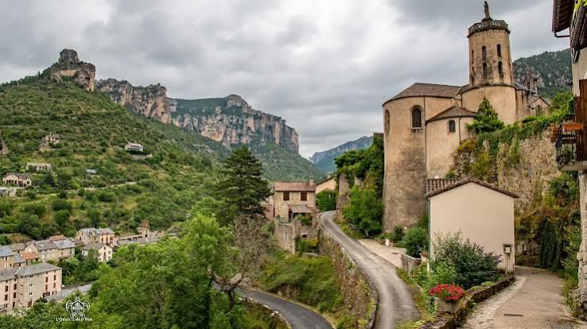
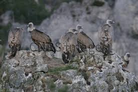

Bâti au confluent du Tarn et de la Jonte, à l’endroit précis où les deux rivières se rejoignent, Le Rozier portait autrefois le nom d’Entr’aygues, littéralement « entre les eaux ». Le site est connu dès l’époque gallo-romaine pour ses ateliers de poterie, avant de connaître un essor religieux au XIe siècle.

Le Rozier, au confluent du Tarn et de la Jonte, face à Peyreleau
En 1075, des moines venus de l’abbaye d’Aniane, dans l’Hérault, fondent un prieuré sur le site et y développent la culture de rosiers importés d’Italie, cultivés tout autour du monastère. Ce lieu prend alors le nom de Campus Rosarium — le « champ de roses » — devenu en occitan Lou Rousiò, puis Le Rozier. Les moines font bâtir l’église Saint-Sauveur, reconstruite en 1705, seul vestige aujourd’hui visible de l’ancien monastère.
Porte d’entrée des gorges du Tarn et de la Jonte, Le Rozier fait face, de l’autre côté de la rivière, au village aveyronnais de Peyreleau et à sa tour carrée du XVIIe siècle, les deux villages n’étant séparés que par un pont. Aujourd’hui carrefour touristique majeur, le village est aussi devenu un haut lieu de la réintroduction du vautour fauve, disparu des Grands Causses au XIXe siècle et revenu peupler les falaises environnantes depuis les années 1980.
🦅
Visite pratique

Les vautours fauves, réintroduits dans les gorges de la Jonte, planent au-dessus du village
⏱️
Durée
Environ 1h à 1h30 de visite, davantage avec la randonnée du rocher de Capluc
📊
Difficulté
Facile dans le village, montée soutenue vers le belvédère de Capluc (625 m)
🚗
Accès
Confluent du Tarn et de la Jonte, à la limite Lozère/Aveyron, sur la D907
🎟️
Tarif
Village en accès libre, Maison des Vautours et sentiers payants ou libres selon les sites
✦ Infos pratiques
Église Saint-Sauveur Reconstruite en 1705, seul vestige de l’ancien prieuré fondé par les moines d’Aniane en 1075
Rocher de Capluc Piton rocheux (625 m) aménagé en fort au XIIe siècle, belvédère et chapelle romane
Maison des Vautours Centre d’observation et d’interprétation dédié aux vautours fauves des gorges de la Jonte, au Truel
Pont vers Peyreleau Passage historique reliant Le Rozier au village aveyronnais voisin, dominé par sa tour carrée
Corniches du Tarn et de la Jonte Sentiers panoramiques vers le Vase de Sèvres, le Cinglegros ou le cirque de Madasse
Ermitages Saint-Michel et Saint-Pons Sites troglodytiques accessibles par sentier depuis le village
Escalade et via ferrata Falaises du causse Méjean et de la Jonte, hauts lieux de l’escalade dans le Grand Sud
Descente en canoë-kayak Point de sortie ou de départ classique pour explorer les gorges du Tarn ou de la Jonte
1
Le confluent Tarn-Jonte
Point de rencontre spectaculaire des deux rivières, qui donne au village son ancien nom d’Entr’aygues et sa position de porte d’entrée des gorges.
2
L’église Saint-Sauveur
Reconstruite en 1705 sur les fondations du prieuré fondé en 1075 par les moines rosiéristes de l’abbaye d’Aniane.
3
Le rocher et le hameau de Capluc
Piton fortifié au XIIe siècle dominant le village, dont l’ascension mène à une chapelle romane et un panorama sur le confluent.
4
La Maison des Vautours
Centre d’observation dédié au vautour fauve, réintroduit avec succès dans les gorges de la Jonte depuis les années 1980.
5
Peyreleau et sa tour carrée
De l’autre côté du pont, le village aveyronnais dominé par sa tour de l’horloge édifiée en 1617, offrant une vue plongeante sur les deux confluents.
🏆
Reconnaissance & patrimoine
🏞️
Grand Site de France
Le Rozier se situe au cœur du Grand Site de France des gorges du Tarn, de la Jonte et des Causses.
Grand Site
🌍
Site Natura 2000
Les gorges du Tarn et de la Jonte forment une Zone de Protection Spéciale de plus de 41 000 hectares, l’un des principaux refuges français du vautour fauve.
⛪
Église Saint-Sauveur
Dernier témoin de l’ancien prieuré fondé en 1075 par les moines de l’abbaye d’Aniane.
🌲
Parc national des Cévennes
Le Rozier adhère à l’aire d’adhésion du Parc national des Cévennes et à la Réserve de biosphère UNESCO.
🦅
Le retour des vautours dans les gorges de la Jonte
Le vautour fauve avait totalement disparu des Grands Causses au début du XXe siècle, victime de la raréfaction du pastoralisme et des persécutions directes. C’est dans les gorges de la Jonte, au pied du Rozier, que débute en 1981 l’un des tout premiers programmes de réintroduction du rapace en France, porté par la Ligue pour la Protection des Oiseaux.
Les gorges du Tarn et de la Jonte englobent aujourd’hui près des trois quarts de la population de vautours fauves des Grands Causses, l’un des principaux sites français de réintroduction de l’espèce.
— Zone de Protection Spéciale Natura 2000, gorges du Tarn et de la Jonte
Depuis, la population a prospéré au point de recoloniser naturellement d’autres massifs du sud de la France. La Maison des Vautours, installée au hameau du Truel entre Le Rozier et Meyrueis, permet d’observer en direct les rapaces nichant sur les falaises voisines grâce à des caméras et longues-vues, faisant du village l’un des meilleurs lieux d’Europe pour l’observation de ce grand planeur aux ailes pouvant dépasser 2,60 mètres d’envergure.
💬
Le saviez-vous ? Anecdotes du confluent
🌹
Un village né des roses
Le nom du Rozier vient bien des rosiers plantés par les moines d’Aniane autour de leur prieuré, importés d’Italie dès le XIe siècle.
💧
Le village « entre les eaux »
Le Rozier s’appelait autrefois Entr’aygues, un nom occitan qui décrit exactement sa position au confluent du Tarn et de la Jonte.
🦅
Une envergure de plus de 2,50 m
Les vautours fauves des gorges de la Jonte comptent parmi les plus grands rapaces d’Europe, capables de planer des heures sans un battement d’aile.
🏺
Des potiers gallo-romains
Bien avant les moines, le site était déjà connu à l’époque gallo-romaine pour ses ateliers de fabrication de poteries.
📍
Aux alentours
Peyreleau village aveyronnais séparé du Rozier par un simple pont, dominé par sa tour carrée du XVIIe siècle.
Gorges de la Jonte canyon parallèle au Tarn, haut lieu d’observation des vautours et de l’escalade.
Montpellier-le-Vieux chaos ruiniforme spectaculaire du causse Noir, à une vingtaine de minutes de route.
Aven Armand grotte ornée d’une exceptionnelle forêt de stalagmites, sur le causse Méjean.
Meyrueis commune la plus méridionale de la Lozère, porte d’entrée du massif de l’Aigoual.
Rocher de Capluc belvédère naturel surplombant directement le village, aménagé en fort dès le XIIe siècle.